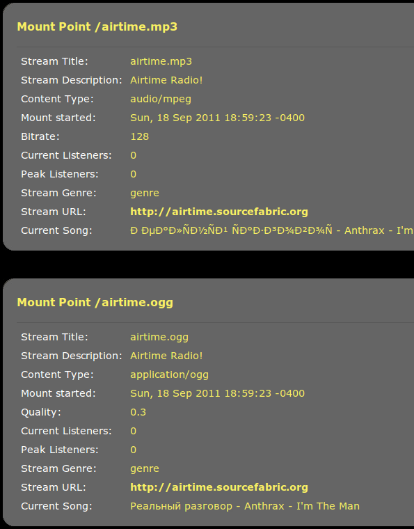

LibreTime supports direct connection to two popular streaming media servers, the open source Icecast (http://www.icecast.org) and the proprietary SHOUTcast (http://www.shoutcast.com). Apart from the software license, the main difference between these two servers is that Icecast supports simultaneous MP3, AAC, Ogg Vorbis or Ogg Opus streaming from LibreTime, whereas SHOUTcast supports MP3 and AAC streams but not Ogg Vorbis or Opus. The royalty-free Ogg Vorbis format has the advantage of better sound quality than MP3 at lower bitrates, which has a direct impact on the amount of bandwidth that your station will require to serve the same number of listeners. Ogg Opus also benefits from good sound quality at low bitrates, with the added advantage of lower latency than other streaming formats. Opus is now an IETF standard (http://tools.ietf.org/html/rfc6716) and requires Icecast 2.4 or later to be installed on the streaming server.
Ogg Vorbis playback is supported in Mozilla Firefox, Google Chrome and Opera browsers, via jPlayer (http://jplayer.org/), and is also supported in several popular media players, including VideoLAN Client, also known as VLC (http://www.videolan.org/vlc/). (See the chapter Stream player for your website on how to deliver jPlayer to your audience). Ogg Opus is relatively new and is supported natively in the very latest browsers, such as Mozilla Firefox 25.0, and media players including VLC 2.0.4 or later.
Streaming MP3 below a bitrate of 128kbps is not recommended for music, because of a perceptible loss of high audio frequencies in the broadcast playout. A 96kbps or 64kbps MP3 stream may be acceptable for voice broadcasts if there is a requirement for compatibility with legacy hardware playback devices which do not support Ogg Vorbis or Opus streams.
Because LibreTime supports simultaneous streaming in multiple formats, it is possible to offer one or more streams via your website, and another independent stream for direct connection from hardware players. You can test whether Ogg streams sound better at low bitrates for yourself, by using the LISTEN button in LibreTime's Master Panel to switch between streaming formats.
Conversely, you may have a music station which wants to stream at 160kbps or 192kbps to offer a quality advantage over stations streaming at 128kbps or less. Since Ogg, AAC and MP3 formats use lossy compression, listeners will only hear the benefit of higher streaming bitrates if the media files in the LibreTime storage server are encoded at an equivalent bitrate, or higher.
UTF-8 metadata in Icecast MP3 streams
When sending metadata about your stream to an Icecast server in non-Latin alphabets, you may find that Icecast does not display the characters correctly for an MP3 stream, even though they are displayed correctly for an Ogg Vorbis stream. In the following screenshot, Russian characters are being displayed incorrectly in the Current Song field for the MP3 stream:

The solution is to specify that the metadata for the MP3 mount point you are using should be interpreted using UTF-8 encoding. You can do this by adding the following stanza to the /etc/icecast2/icecast.xml file, where libretime.mp3 is the name of your mount point:
<mount>
<mount-name>/libretime.mp3</mount-name>
<charset>UTF-8</charset>
</mount>After saving the /etc/icecast2/icecast.xml file, you should restart the Icecast server:
sudo invoke-rc.d icecast2 restart
Restarting icecast2: Starting icecast2
Detaching from the console
icecast2.